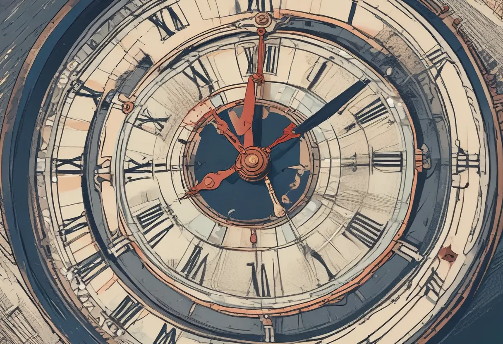

마지막 기차와
사라진 역장폐역 전날 밤, 눈 위에 모자만 남았다.

산골 간이역 「눈골역」의 마지막 열차를 찍으러 온 한겨울과 도토리. 밤 9시 반, 40년 동안 역을 지킨 역장이 승강장 벤치에 모자만 남기고 사라졌습니다. 신호소까지 이어진 발자국은 한 줄뿐 — 범인은 누구이고, 왜였을까요?
앞 화를 안 해 봤어도 바로 할 수 있어요. 제1화 · 제2화 · 제3화 · 제4화
진행은 이 브라우저에 저절로 저장됩니다. 등장하는 사람·장소는 모두 지어낸 것입니다.
눌러서 계속 ▸
어디를 볼까요?
장소를 살피고 사람들에게 물어 단서를 모으세요. 단서가 충분하면 추리를 시작할 수 있어요.
누구에게 물을까요?
마지막 기차와 사라진 역장
- 21시 23분 사진 속 그림자는 둘 — 신호소까지 함께 간 사람이 있었다.
- 돌아온 자국이 없는 건, 같은 발자국을 거꾸로 밟으며 왔기 때문(테두리가 두 번 뭉개짐).
- 젖은 남편의 장화, 비어 있는 「신호소」 열쇠 고리 — 문옥자.
- 칠판의 1·4·7 = 차림표 첫 글자 「가·지·마」. 40년 동안 못 한 말이었다.

다음 사건 — 제6화 「거꾸로 가는 시계와 잠긴 방」
11월 27일(금) 저녁 공개. 안에서 잠긴 시계방 작업실, 바뀐 유언장, 하나만 거꾸로 가는 시계.
추리 끝, 다시 일하러 갈 시간이라면 — 매일 손으로 반복하는 일은 Taskhand 에게 한 번 보여 주면 다음부터 혼자 합니다(무료).